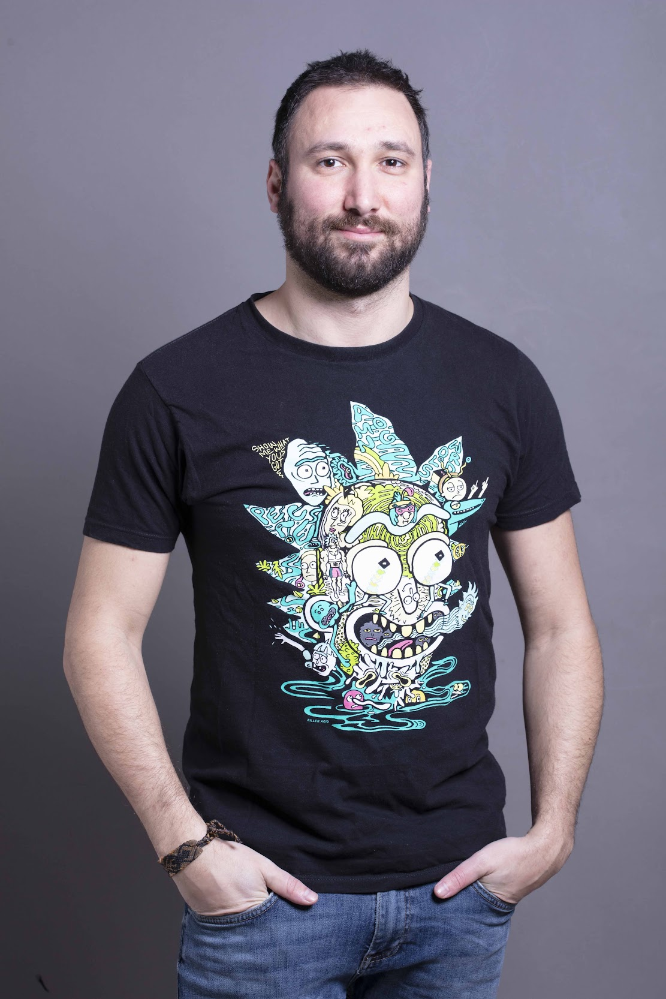

“Physics is like sex: sure, it may give some practical results, but that's not why we do it.” ― Richard P. Feynman
I am an Assistant Professor at Bocconi University since 2018, an open source contributor (mostly machine learning libraries for Julia), and a lindy-hop dancer.
I'm currently working on questions which fall at the interface between the statistical physics of disordered systems and artificial neural networks. Here I give a quick overview of my research.